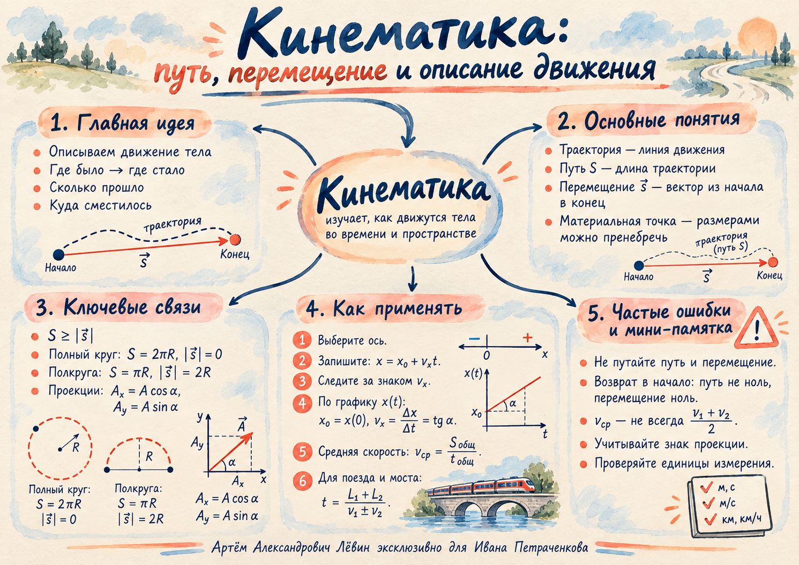

Физика · ЕГЭ · Путь А · 25.09.26
Путь и перемещение
Как описать движение тела: отделить длину траектории от вектора между двумя точками, выбрать проекцию и прочитать график координаты.
01 / описать маршрут
Траектория, путь, перемещение
Материальная точка — модель тела, размерами которого в данной задаче можно пренебречь. Траектория — линия движения. Путь S — её длина; он всегда неотрицателен. Перемещение s⃗ — вектор из начального положения в конечное.
После полного оборота по окружности радиуса R тело возвращается в начало: S = 2πR, |s⃗| = 0. При перемещении в противоположную точку той же окружности: S = πR, |s⃗| = 2R.
02 / выбрать оси
Вектор в координатах
Из точки A(xₐ; yₐ) в точку Б(xᵦ; yᵦ) координаты перемещения равны разностям координат конца и начала.
При движении вдоль Ox: sₓ = x − x₀. Если вектор длины A образует угол α с осью Ox, его проекции: Aₓ = A cos α, Aᵧ = A sin α.
Косинус связывает прилежащий катет с гипотенузой, синус — противолежащий.
03 / прочитать график
Равномерное движение
При равномерном движении проекция скорости постоянна. Координата меняется линейно со временем.
x₀ — координата при t = 0; vₓ — проекция скорости, t — время. Положительный vₓ означает движение вдоль Ox, отрицательный — против Ox. Наклон линии на графике x(t) показывает проекцию скорости: vₓ = Δx / Δt.
В обозначениях пособия также дано vₓ = tg α при согласованном единичном масштабе осей; для расчёта по графику надёжнее пользоваться отношением Δx/Δt с единицами осей.
Менять время и читать координату →04 / учесть всё время
Средняя путевая скорость
Для равных промежутков времени средняя путевая скорость равна среднему арифметическому: при 10 и 30 км/ч она составляет 20 км/ч. При равных половинах пути времена обычно различны; простое среднее скоростей тогда применять нельзя.
Пример из тренировки: половина пути со скоростью 30 км/ч, вторая — 60 км/ч. Если весь путь равен S, время равно S/(2·30) + S/(2·60) = S/40, поэтому vср = 40 км/ч.
05 / учесть размеры
Протяжённые тела
Если поезд проходит мост, его нужно переместить на сумму длины поезда и длины моста. Для двух протяжённых тел при встречном движении в приведённой в пособии модели t = (L₁ + L₂)/(v₁ + v₂); при движении вдогонку t = (L₁ + L₂)/|v₁ − v₂|, когда скорости различны и более быстрое тело догоняет медленное.
06 / закрепить
Задачи из пособия
Выполняйте самостоятельно; ответы собраны после задач. Для первой задачи доступен пошаговый разбор.
Шаг 1 из 4
Полный оборот при R = 5 м
- Полный оборот по окружности радиуса 5 м: найдите путь и модуль перемещения.
- Полуокружность радиуса 20 м: найдите путь и модуль перемещения.
- Точка переместилась из (2; 3) в (8; 11): координаты перемещения?
- Найдите модуль вектора (6; 8).
- Вектор 12 м образует угол 60° с Ox: найдите проекцию на Ox.
- x = 4 + 5t: найдите x₀ и vₓ.
- За 20 с координата изменилась на 60 м: найдите vₓ.
- График x(t) образует угол 30° с осью времени; при заданном в пособии масштабе tg 30° = 1/√3: найдите скорость.
- Половина времени при 40 км/ч, вторая половина при 80 км/ч: средняя скорость?
- Половина пути при 30 км/ч, вторая при 60 км/ч: средняя скорость?
- Поезд 400 м проходит мост 200 м со скоростью 72 км/ч: время?
- Два тела навстречу друг другу: 6 и 4 м/с, расстояние 300 м: время встречи?
- x = −10 + 2t: через сколько секунд тело окажется в начале координат?
- Человек обошёл озеро диаметром 100 м: путь и модуль перемещения?
Проверить ответы к 14 задачам
1) 10π м; 0. 2) 20π м; 40 м. 3) (6; 8). 4) 10. 5) 6 м. 6) x₀ = 4 м, vₓ = 5 м/с. 7) 3 м/с. 8) 1/√3 м/с при оговорённом масштабе. 9) 60 км/ч. 10) 40 км/ч. 11) 30 с. 12) 30 с. 13) 5 с. 14) 100π м; 0.
Быстрая проверка
1. Модуль перемещения после полного оборота по окружности?
2. Половину времени двигались со скоростью 10 км/ч, вторую половину — 30 км/ч. Какова средняя путевая скорость?
3. Какой знак у vₓ при движении против Ox?
Самопроверка
Материалы занятия
Вернуться к теме
Ментальная карта объединяет основные понятия занятия. Исходные файлы доступны для повторения и печати.
{kind=link}
